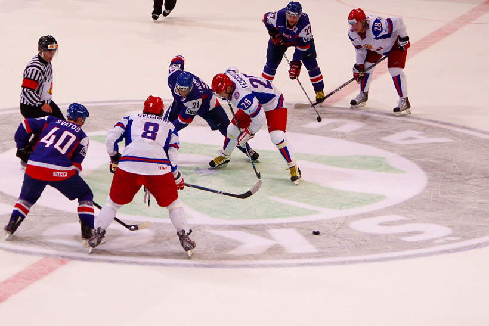
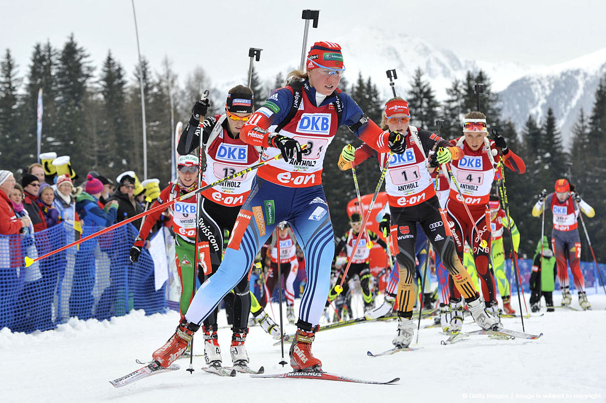
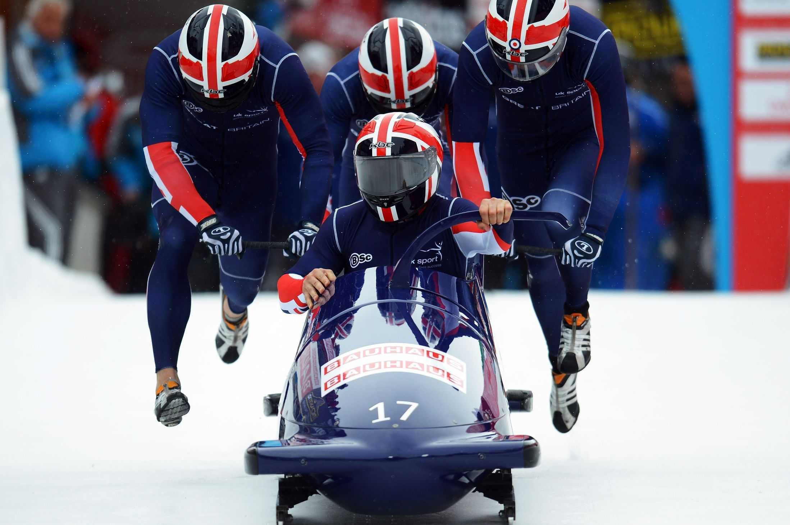
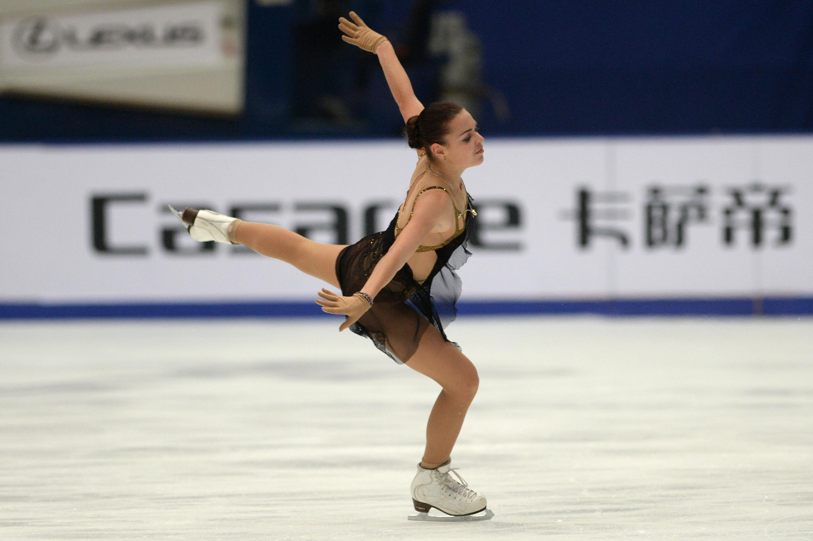

| Виды зимних видов спорта | ||
|---|---|---|
| Главная | Виды | Гордость России |
| Вид спорта | Описание | Фотография |
| Хоккей | Вид спорта, в котором две команды стараются поразить (мячом или шайбой) цель — ворота противника, используя клюшки. В каждой команде есть один вратарь, который защищает ворота своей команды, и несколько полевых игроков. |  |
| Керлинг | Командная спортивная игра на ледяной площадке. Участники двух команд поочерёдно пускают по льду специальные тяжёлые гранитные снаряды («камни») в сторону размеченной на льду мишени («дома»). В каждой команде по четыре игрока. | |
| Биатлон | Зимний олимпийский вид спорта, сочетающий лыжные гонки со стрельбой из винтовки. C 1993 года официальные международные соревнования по биатлону, включая Кубок мира и чемпионаты мира, проходят под эгидой Международного союза биатлонистов. |  |
| Бобслей | Зимний олимпийский вид спорта, представляющий собой скоростной спуск с гор по специально оборудованным ледовым трассам на управляемых санях — бобах. |  |
| Фигурное катание | Конькобежный вид спорта, относится к сложнокоординационным видам спорта. Основная идея заключается в передвижении спортсмена или пары спортсменов на коньках по льду с переменами направления скольжения и выполнении дополнительных элементов (вращений, прыжков, комбинаций шагов, поддержек и др.) под музыку |  |